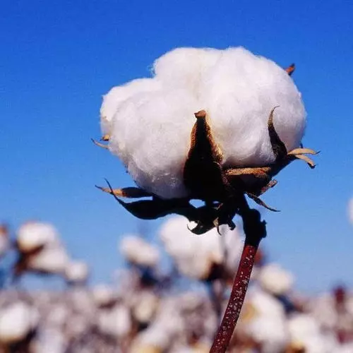

第二版
第二版

“天下棉花看中国，中国棉花看新疆。”——题记
驼铃悠远，黄沙阵阵，古道漫漫，丝路绵长。
一千七百年前，沿着张骞走过的足迹，“白叠”由印度阿拉伯等地跋山涉水来到新疆地区，“白叠”便是棉花的古称。1995年，考古工作者对营盘遗址进行了考察发掘，从中出土了数百件珍贵文物，其中包括大量的棉纺织品以及部分附有棉铃壳的籽棉，这为“新疆地区是我国历史上最早种植棉花的地区”提供了有力证据。不仅如此，“高昌多草木，草实如茧，茧中丝如细纑，名为白叠子，国人多取织以为布，布甚软白，交市用焉”，从《梁书·西北诸戎传》的记载中也可窥见当时棉纺织业的兴盛与棉布交易市场的繁荣。每年九月，天山南北的棉花如数开放，成为了西北边陲一抹别样的白。正是这一朵朵朴实又温暖的棉花守护了西域一代又一代的远古先民，温柔了大漠一年又一年的寂静岁月。它并没有选择在西北边境独自惊艳。约一千年前，新疆草棉经河西走廊传入今陕西一带，自此，棉花在九州大地深深地扎下了根。毫无疑问，新疆地区历史上就是中华文明向西开放的门户与中介，棉花东进与丝绸西传更是历史上中原地区与新疆地区经济文化交流互补的缩影。
一千七百年后的今天，白茫茫的棉花田被收割机裁成一条条的“白色的绸缎”，一眼望去，甚是美丽。棉田里，没有风沙的时候，天地一片明净。新疆的日头有点烈，大把大把的阳光，撒向棉田里，照在人们的身上，后背有些发烫，额头渗出汗珠，可看着眼前这白茫茫的一片，心里是满满的欢喜与雀跃。机器采棉的声音响彻云霄，“白棉吐絮”的整齐划一，采下的棉花如一座座雪山般堆积起来，等待着火车飞机将它们运往祖国的四面八方。你是否知道？棉花是生产人民币的原料，我国2020-2021年度棉花产量约595万吨，其中，新疆棉产量520吨，占国内产量比重约87%；你是否知道？从棉籽中提取的棉花籽油富含高质量的多种维他命，脂肪酸，含棉花籽油的护肤产品有抗氧化的作用；你是否知道？抗疫期间，口罩棉球等防疫物资紧缺，新疆半年内运往全国各地的棉花量高达300万吨。
新疆棉花很遥远，在北境，在天边。对我们而言，新疆棉花并不遥远，在身旁，在心上。
“那花，远看像一颗颗星星，近看像一朵朵白色的玫瑰。”曾经，一朵小小的白色棉花承载了先民的期盼与文明的温度；今天，新疆棉花将以柔韧之姿守护九州大地与华夏子民。